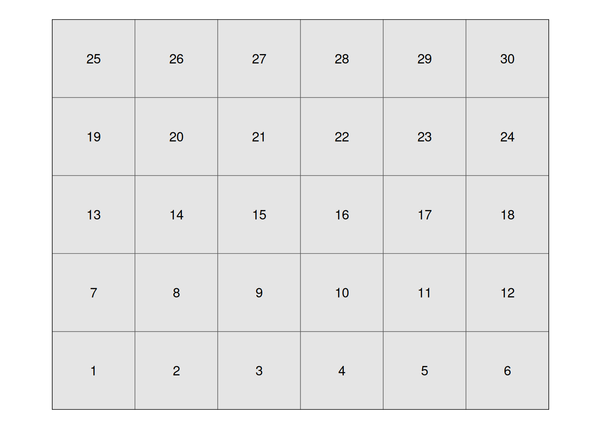
Introduction
In the last unit, we were introduced to multiple-treatment experiments using an example with which many of you are familiar: a hybrid research or demonstration trial. Recall how the analysis of variance worked: we compared two sources of variation to see how much of that variation each of them explained.
There were two effects in our original trial: treatment and error
\[Y_{ij}=\mu + T_i + \epsilon_{ij}\]
The Analysis of Variance (ANOVA) was used to calculate and compare these variances. First, the sums of squares from the treatment means and the error (the summed distributions of observations around each treatment mean) were calculated. By dividing the sum of squares by their degrees of freedom, we obtained the treatment and error mean squares, also known as their variances. The F-value was derived from the ratio of the treatment variance to the error variance. Finally, the probability that the difference among treatments was zero, given the F-value we observed, was calculated using the F-distribution.
Completely Randomized Design (CRD)
The Completely Randomized Design is the simplest multiple-treatment design we can conduct. That’s precisely what makes it such a good teaching tool.
Designing the trial
When designing a CRD trial, the main consideration is the number of experimental units. All we have to do after that, is to subdivide the field into these experimental units and randomize the treatments within the field.
Some of the trial characteristics affecting the number of experimental units are:
- experimental unit size: the area taken by each experimental unit will limit the number of experimental units within a limited area
- number of replications: we’ve been over the importance of this before, right?
- number of factors: are we only testing a product, or are we also testing application timing?
- uniform environment: are plots in the edge of the field expose to the same environment as the ones in the middle?
An example with one factor only
Let’s take a look at a simple layout in which we only have one factor with 6 treatments. Just like before, we will look at an example. Here, we will work with 6 candidate fungicide treatments and we’re testing whether they affect corn yield.
We will use the field below to illustrate the different trial designs. This field has 30 experimental units, arranged in a 6 x 5 layout:
We can simply randomly assign the treatments to our experimental units going from 1 to 30. Fungicide treatments are coded F1 through F6 for.
One instance of this layout can be seen below:
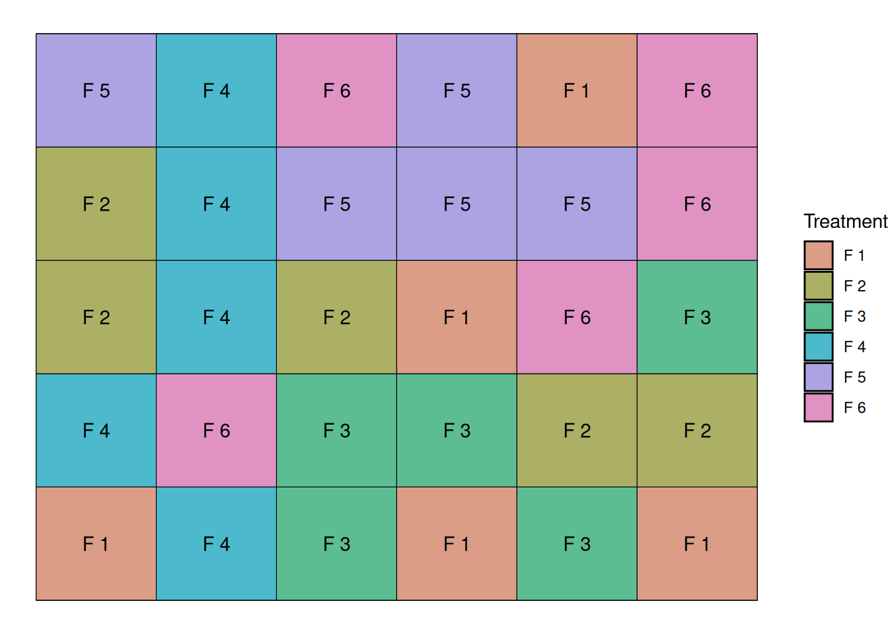
I could randomize this trial many times and end-up with different randomization, and these would all be considered a Completely Randomized Design.
The linear additive model
When we model a completely randomized design, like the one from this example, our linear additive model can is really simple. There are two effects in our original trial: treatment and error
\[Y_{ij}=\mu + T_i + \epsilon_{ij}\]
Where,
\(Y_{ij}\) = observed yield
\(\mu\) = overall mean yield
\(\tau_i\) = fungicide treatment effect
\(\varepsilon_{ij}\) = random error
Model Assumptions
So far, I have avoided talking much about model assumptions because the examples we looked at represented ideal cases. This simplified the modeling framework, allowing us to focus on other important parts of the modeling process.
As we move away from simpler cases, it is important to think about what assumptions we’re making when are building these models.
When building these models, we assume:
The functional form is correct: This means that we assume the formula used to build these models correctly represents the relationship between the variables. For instance, if the relationship is nonlinear, and your formula assumes linearity, this is a problem.
Independence of Errors: This is one of the most important assumptions, and the one that can really be affected by trial design. This means we assume that errors are not correlated. When we ignore correlation between errors, we assume that each observation gives us more information about the population then they actually give, which can cloud the conclusions we draw from our models.
Normality of Residuals: We assume that the residuals (errors) are normally distributed and with mean zero.
Equal Variance (Homoscedasticity): We assume that the residual error is constant in the data. For example, if your residual error increases as your response variable increases, this can also be a problem.
Looking at the data
We can take a look at the structure of this dataset below. We have columns for treatment, rep, and yield.
trt rep yield
29 F6 4 178.1036
30 F6 5 180.6479
25 F5 5 182.8277
5 F1 5 183.7903
2 F1 2 187.0709
23 F5 3 187.7397Let’s plot the data so we can have a better idea of what to expect when we fit a model. Like before, open circles here indicate individual observations, and filled triangles and error bars indicate sample means and standard error.
It seems like there is quite a bit of variability but maybe fungicide treatment F3 has a different mean? Let’s use a model to figure that out!
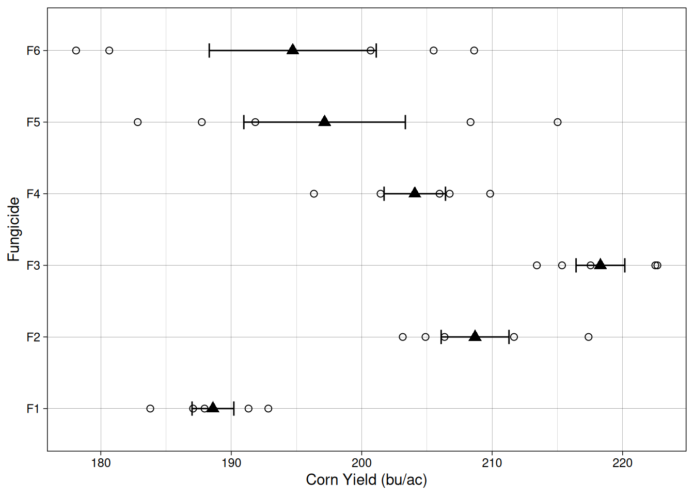
Modeling the data
Here, we are testing the following hypotheses:
\[H_0: \tau_{1}= \tau_{2}= \ldots = \tau_{6} = 0\]
\[H_a: at~least~one~\tau_i \neq 0\]
We will fit a linear model, like the one we fit before for the ANOVA. We will use the lm() function (linear model):
note: this is the same as using aov() and then summary().
model1 <- lm(yield ~ trt, data = fungicide_crd)
anova(model1)Analysis of Variance Table
Response: yield
Df Sum Sq Mean Sq F value Pr(>F)
trt 5 2854.9 570.97 7.0165 0.000362 ***
Residuals 24 1953.0 81.38
---
Signif. codes: 0 '***' 0.001 '**' 0.01 '*' 0.05 '.' 0.1 ' ' 1This model provides strong evidence to reject \(H_0\) and conclude that at least one treatment has an effect different from zero.
Great! This works because in this example, the variability is really random, meaning that our errors (\(\epsilon_{ij}\)) are really independent from each other and normally distributed.
Now, what happens when that assumption is not true??
Systematic errors
To illustrate this problem, let’s go back to our field and look a little closer at a common source of systematic error in agricultural fields.
Let’s imagine that the first 12 plots are exposed to different soil conditions than the rest of the field. For example, there could be a soil fertility gradient, or this could be a lower part of the field, which is prone to water logging.
Since the water logging example is a common problem in Iowa, let’s go with that. Let’s assume that this that this water logging causes a 50 bu/ac yield penalty.
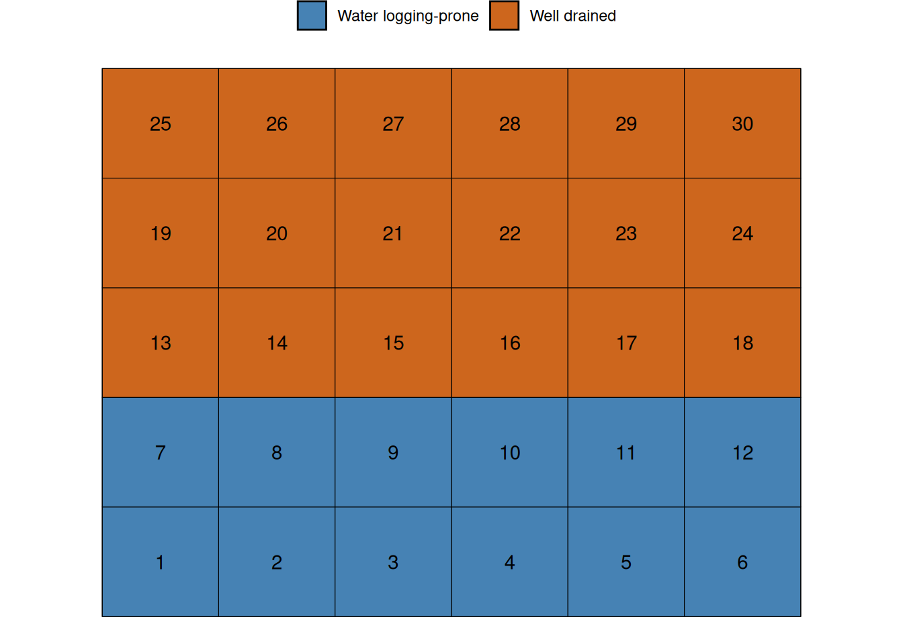
Now, let’s take a look at the experiment results when this waterlogging condition exists. Because I wanted us to be able to compare this dataset with the previous, I included both experimental datasets in the graph below. The black color indicates the previous dataset, when everything was great and this waterlogging condition did not exist. The red colored points indicate the current dataset, when waterlogging decreased the yield of plots 1 through 12 by 50 bu/ac.
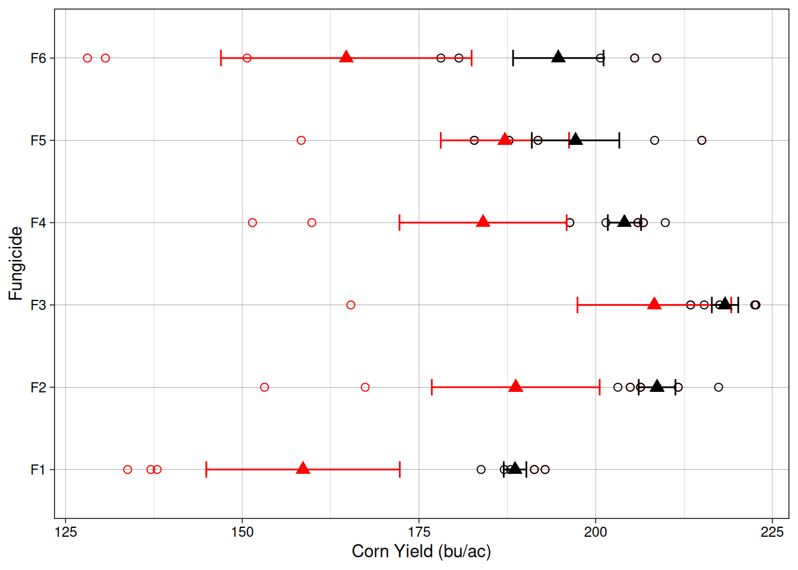
Ok, it seems like all treatments had a decrease in average yield. Let’s see what that means for our ANOVA.
We will use lm() again, except that now, I will use the dataset fungicide_crd2, which contains the dataset with this simulated soil effect.
Now, because of the added variability of the systematic error, we can notice that our p-value is greater than 0.05. While that can be upsetting, let’s take a look at what is happening really.
model2 <- lm(yield ~ trt, data = fungicide_crd2)
anova(model2) Analysis of Variance Table
Response: yield
Df Sum Sq Mean Sq F value Pr(>F)
trt 5 8069.5 1613.90 1.9696 0.1198
Residuals 24 19665.5 819.39 Before, the relationship between the variance partitioned for the treatment and the variance partitioned for the residuals was 7.01 (our \(F\)-value).
Df Sum Sq Mean Sq F value Pr(>F)
trt 5 2854.873 570.97466 7.01653 0.0003620031
Residuals 24 1953.015 81.37564 NA NA
Total 29 4807.889 652.35030 NA NANow, that ratio is 1.96. This means now that we are a lot less certain that the observed \(F\)-value indicates that the treatments differences are not simply a matter of chance.
Df Sum Sq Mean Sq F value Pr(>F)
trt 5 8069.511 1613.9022 1.969627 0.1198466
Residuals 24 19665.476 819.3949 NA NA
Total 29 27734.987 2433.2970 NA NAWe can see that failing to include this systematic source of variability can be a problem. The question is, how do we deal with it? We can build our experimental designs to account for these sources of variability. Let’s take a look at the Randomized Complete Block Design.
Randomized Complete Block Design
Blocking is simply grouping experimental units that are similar to each other.
Instead of pretending all 30 plots are the same, we acknowledge that:
Some plots sit in the pothole
Some plots sit in well-drained soil
So we create blocks that capture that environmental structure.
The key idea is this:
We do not eliminate environmental variability. We account for it.
Instead of letting this inflate residual variance, we will model it explicitly as a block effect.
Since we know that the first two rows of plots sit in a lower area of the field, we can define blocks running horizontally. This will give us 5 blocks, as we can see below:
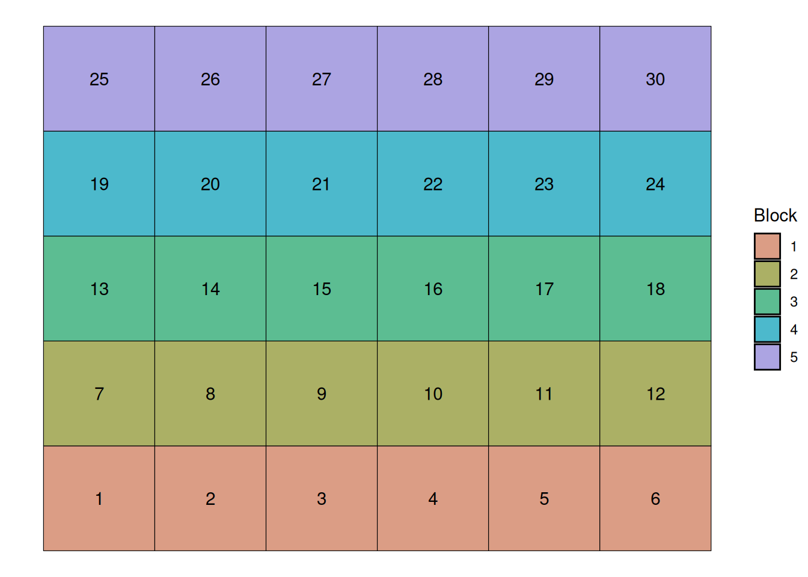
Now, we randomize our treatments within each block. This will allow us to parse out the variability inherent to the soil variability from the unexplained variability. Let’s randomize the treaments now:
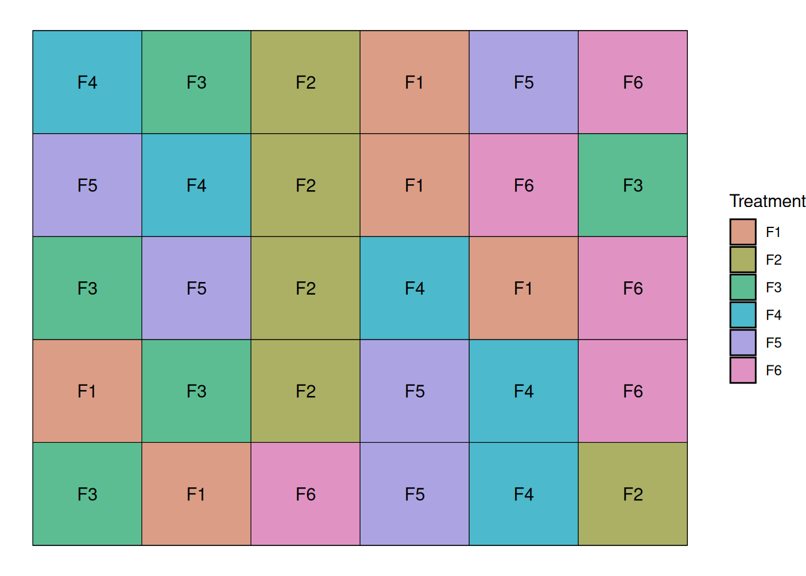
Let’s take a look at the data from the randomized complete block trial. One of the things that stand out is that for every treatment, there are two points below the mean. These two points correspond to to the two water logging-prone blocks.
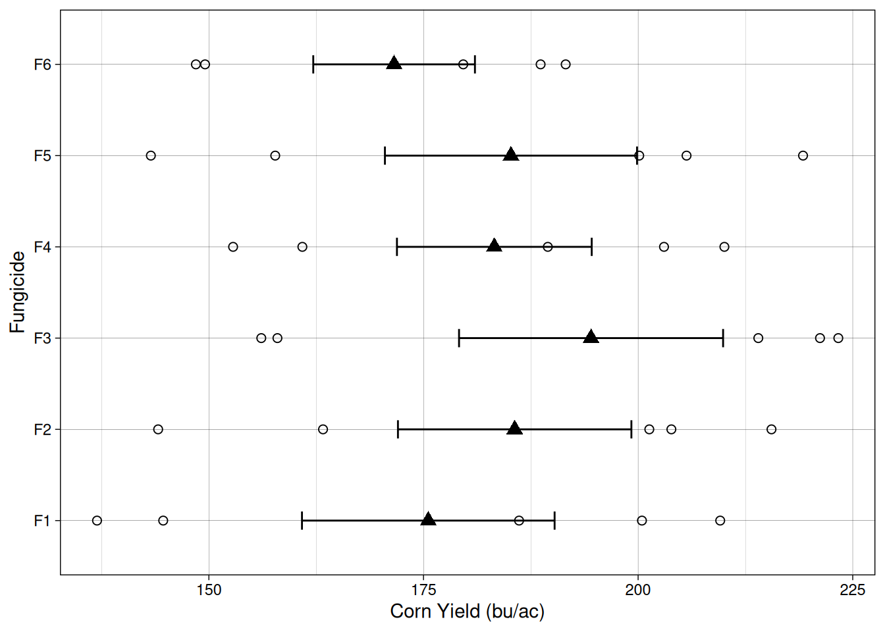
The linear additive model
One important thing that we can think about is how, by accounting for soil variability using a blocked structure, we explicitly remove the soil variability from the residuals (\(\epsilon_ij\)). Our linear additive model now includes a block effect, as we can see below:
\[Y_{ij}=\mu + \tau_i + B_j + \epsilon_{ij}\]
Where,
\(Y_{ij}\) = observed yield
\(\mu\) = overall mean yield
\(B_j\) = block effect
\(\tau_i\) = fungicide treatment effect
\(\varepsilon_{ij}\) = random error
What does this mean for the ANOVA?
Below, we can see the result of the analysis of variance table. Check how much of the MSE is allocated in the block effect. All of that error, if left unaccounted for, would inflate our residual MSE, which would decrease our \(F\)-value.
lm3 <- lm(yield ~ trt + block, data = rcbd_layout)
anova(lm3)Analysis of Variance Table
Response: yield
Df Sum Sq Mean Sq F value Pr(>F)
trt 5 1647.3 329.5 4.453 0.006882 **
block 4 19937.3 4984.3 67.368 2.555e-11 ***
Residuals 20 1479.7 74.0
---
Signif. codes: 0 '***' 0.001 '**' 0.01 '*' 0.05 '.' 0.1 ' ' 1We can see that blocking the design is meant to account for pre-existing variability. The main assumption here is that experimental units within a block are exposed to uniform conditions.
By modeling the block effect explicitly, we prevent environmental variability from inflating the residual error. This increases the sensitivity of the experiment and improves our ability to detect treatment differences.
A brief digression about Fixed and Random Effects
Before we move forward, it is important to briefly discuss the difference between fixed effects and random effects. This distinction becomes important when we start working with blocked experiments and, later on, with more complex experimental designs.
In agricultural experiments, fixed effects are factors where we are interested in comparing the specific levels included in the experiment. In other words, the treatments we include are the ones we want to draw conclusions about.
For example, in the fungicide trial we have been simulating, the treatments are the five fungicides:
F1, F2, F3, F4, F5, and F6
In this case, these fungicides are not a random sample of all possible fungicides in the world. Instead, they are specific products that we intentionally selected because we want to compare their performance. Because of that, fungicide treatment is considered a fixed effect.
Random effects are different. A random effect represents a source of variability where the individual levels themselves are not of primary interest. Instead, the levels are viewed as a sample from a larger population of possible levels.
When a statistical model includes both fixed effects and random effects, it is called a mixed model.
This means that, if I do not intend to make any statements about the effect of block itself, but just want to account for that variability, we can model the block effect as a random effects Here, we do not intend to make a statement about how waterlogging will affect yield in this trial, all we want to do is to account for the block variability.
If we treat blocks as a random effects we assume that the blocks in our experiment represent a random sample of possible field conditions.
Modeling block as a random effects
In this case, the linear additive model looks like this:
\[Y_{ij}=\mu + \tau_i + b_j + \epsilon_{ij}\]
\[b_j \sim N(0, \sigma^2_{block})\]
Where,
\(Y_{ij}\) = observed yield
\(\mu\) = overall mean yield
\(b_j\) = random effect of block
\(\tau_i\) = fungicide treatment effect
\(\varepsilon_{ij}\) = random error
To fit mixed effect models in R, we will have to use a package. There’s no way around it. There are two main packages for this lme4 and nlme. Here, we will use nlme for simplicity.
library(nlme)
model_mixed <- lme(yield ~ trt,
random = ~ 1 | block,
data = rcbd_layout)
anova(model_mixed) numDF denDF F-value p-value
(Intercept) 1 20 200.72743 <.0001
trt 5 20 4.45298 0.0069If we want to see how much variability is attributed to the random effects, we can examine the variance components estimated by the model.
VarCorr(model_mixed)block = pdLogChol(1)
Variance StdDev
(Intercept) 818.3916 28.607545
Residual 73.9863 8.601529Plots within the same block tend to experience similar environmental conditions. Because of that, their yields are often more similar to each other than to plots located in other parts of the field. In other words, observations within a block are not completely independent.
If we ignore this structure and treat every observation as independent, some of that shared block variability ends up inside the residual error term. This inflates the residual variance and can make it harder to detect treatment differences.
By including block as a random effect, the model explicitly accounts for this shared variability. Instead of being treated as unexplained noise, the block-to-block variation is separated from the residual error.
Factorial Design
Now, in agronomy we are often interested in more than one factor at a time. We have just looked at a simple example that investigated 6 fungicide treatments.
Let’s now imagine that we have another factor in which we are interested as well. We want to know wether the fungicide treatments behave differently with irrigation. In this case, we are interested in two factors.
Since we want to evaluate the effect of fungicide, the effect of irrigation, and whether the effect of fungicide is different when there is irrigation, we will set up a factorial design with two factors.
From a design perspective, factorial experiments allow us to estimate both the main effects and the interaction between factors, because every combination of the factor levels appears in the experiment. This keeps our assumptions aligned with reality: we model the interactions we observe, maintain independent errors, and can properly test all effects.
Design example with two factors
We will keep using the same trial location, with 30 experimental units. To do so, and still include another level, I will choose fewer fungicide treatments. Let’s pick treatments F1, F3, and F4.
Now, we can include another factor: with or without irrigation.
Since we have 3 fungicides and 2 irrigation levels, the factorial design produces 3 × 2 = 6 treatment combinations.
fungicide_treatments <- c('F1', 'F3', 'F4')
irrigation_treatments <- c('Yes', 'No')
factorial_treatments <- expand.grid(fungicide = fungicide_treatments,
irrigation = irrigation_treatments)
factorial_treatments fungicide irrigation
1 F1 Yes
2 F3 Yes
3 F4 Yes
4 F1 No
5 F3 No
6 F4 NoLet’s arrange our treatments in 5 blocks, like before, and let’s randomize the treatments within block.
Below, the graph shows that every block contains a treatment that corresponds to a combination of our factors.
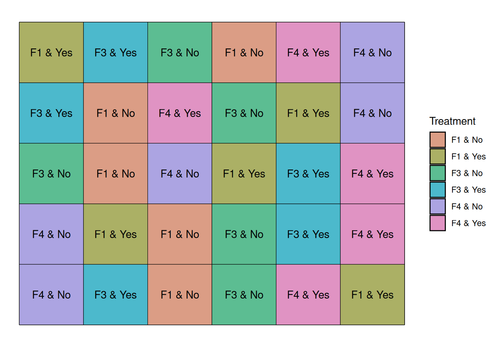
Let’s take a look at the data from this experiment. On the Y axis, we have the different fungicide-irrigation combinations.
Comparing within the same fungicide, it seems like on average, irrigation increased yield as well.
Now, is the effect of irrigation and fungicide different for the different combinations? That’s what the interaction term of the model will answer.
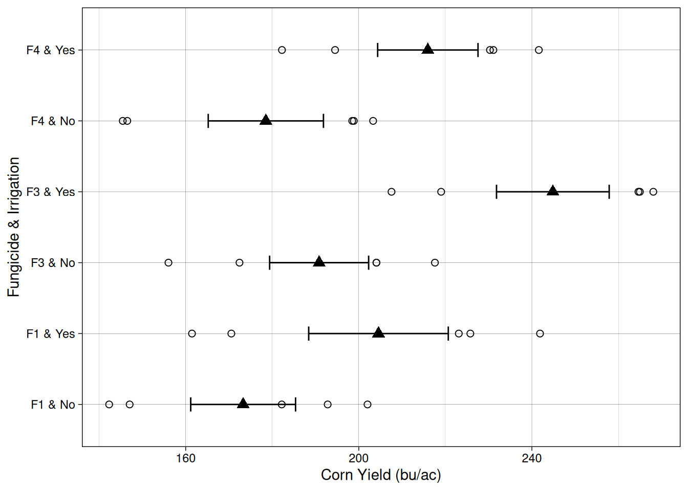
We can visualize the relationship between out treatments and yield using what is called an interaction plot.
Interaction plots provide a useful visual way to detect interactions. If the lines are roughly parallel, it suggests that the effect of one factor is consistent across the levels of the other factor. When the lines are not parallel, this indicates a possible interaction between the factors.
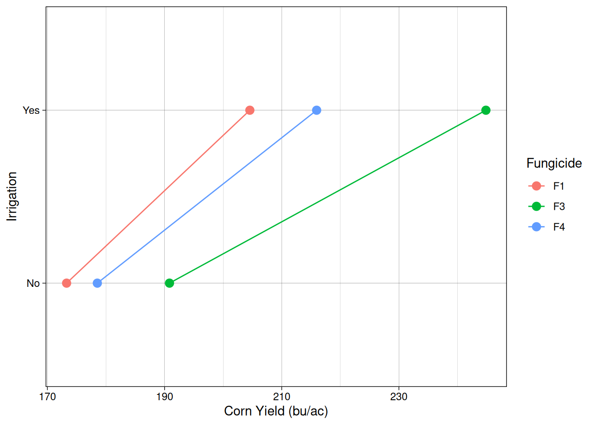
The linear additive model
Now, our model is getting a little more complicated, right? The simple “treatment” effect (\(\tau_i\)), has been replaced by \(F\) and \(I\), which indicate the effects of our two treatments. In addition, we also have the interaction term (\(FI_{ij}\)), which indicates whether fungicide and irrigation treatments affect each other.
In this case, I kept block as a random effect, but I could just as easily have included block as a fixed effect. I made this choice based on the fact that we do not want to make any statements about the two first blocks, which are waterlogging-prone. We want to include block in the model to account for this systematic variability coming from the different soil conditions.
\[Y_{ijk}=\mu + F_i + I_j + FI_{ij} + b_k + \epsilon_{ijk}\]
\[b_k \sim N(0, \sigma^2_{block})\]
Where,
\(Y_{ijk}\) = observed yield
\(\mu\) = overall mean yield
\(F_i\) = fungicide treatment effect
\(I_j\) = irrigation treatment effect
\(FI_{jk}\) = interaction between fungicide and irrigation
\(b_k\) = random effect of block
\(\varepsilon_{ijk}\) = random error
Fitting this model in R
Just like before, we will use the lme() function, which is design to fit linear mixed effects models.
model_fac <- lme(yield ~ fungicide * irrigation,
random = ~ 1 | block,
data = factorial_layout)
anova(model_fac) numDF denDF F-value p-value
(Intercept) 1 20 252.41707 <.0001
fungicide 2 20 40.06928 <.0001
irrigation 1 20 226.75717 <.0001
fungicide:irrigation 2 20 6.24372 0.0078The ANOVA table output shows us strong evidence that both the fungicide and irrigation treatments have an effect on corn yield. Furthermore, the interaction row (fungicide:irrigation) shows us that our fungicide treatments behave differently whether there’s irrigation or not.
Split-Plot Design
Up to this point, we have been assuming that all treatments can be randomized at the plot level. In other words, we assumed that each experimental unit can independently receive any treatment.
However, in real agricultural experiments this is not always practical.
For example, in the factorial experiment we just constructed, we included an irrigation factor with two levels: Yes and No. In our simulated design we randomly assigned irrigation treatments to individual plots.
In practice, however, irrigation is often difficult to apply on a plot-by-plot basis. It may be much easier to irrigate larger strips of land rather than individual plots.
To account for this practical limitation, we can use a split-plot design.
In a split-plot experiment, one factor is applied to large experimental units (called main plots or whole plots), while another factor is applied to smaller units within them (called subplots).
In our case:
- Irrigation will be the main plot factor
- Fungicide will be the split-plot factor
Constructing the split-plot layout
We will keep using our field with 5 blocks and 30 experimental units.
Instead of assigning irrigation at the plot level, we will assign irrigation to large strips within each block.
Each block will contain:
- one irrigated strip
- one non-irrigated strip
Each strip will contain the three fungicide treatments.
This means that fungicides will still be randomized, but only within irrigation strips.
The graph below shows that the irrigation strips start at the left side of each block and run to the middle of the block.
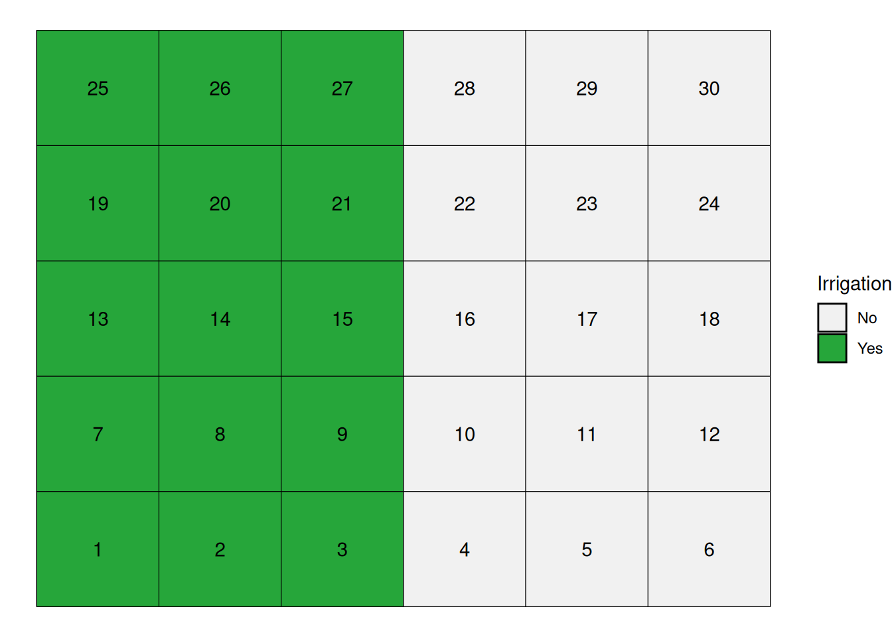
In the figure below, irrigation treatments form large strips within each block, while fungicides are randomized within those strips.
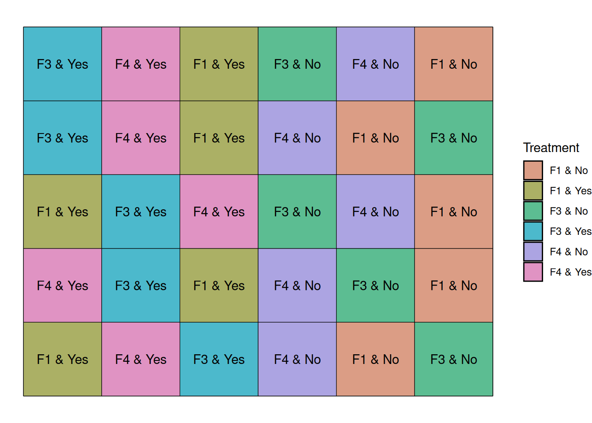
Notice that irrigation treatments are applied to groups of plots, not individual plots. This is what creates the split-plot structure and requires a different statistical model.
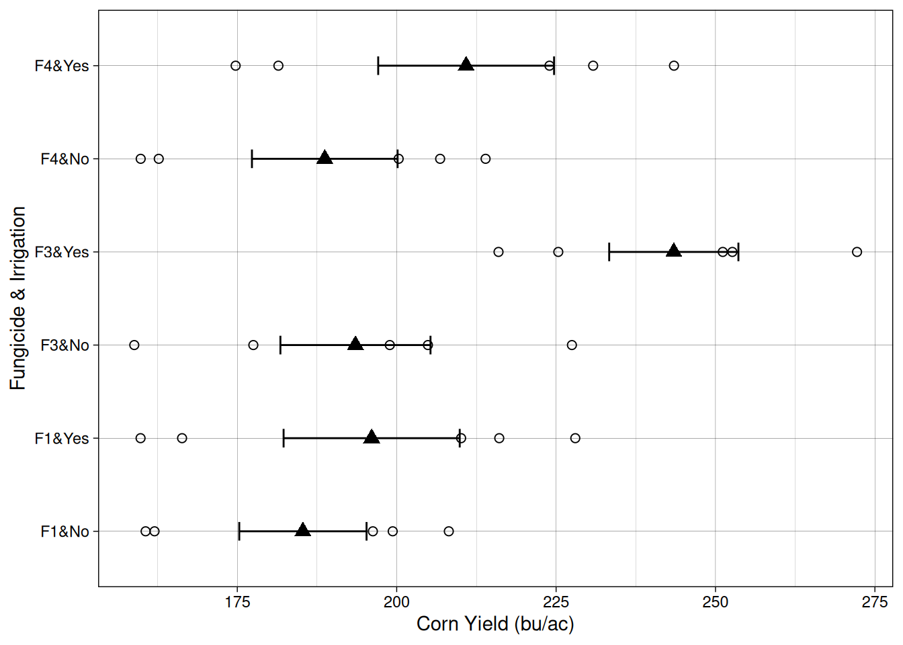
The linear additive model
Split-plot experiments introduce multiple sources of variability.
Because irrigation is applied to large plots, the experimental units receiving irrigation are not independent at the same level as the fungicide subplots.
We therefore include two sources of random variation:
- Block-to-block variability
- Main-plot variability (irrigation strips within blocks)
The linear model becomes:
\[Y_{ijk}=\mu + F_i + I_j + FI_{ij} + b_k + m_{jk}+ \epsilon_{ijk}\]
\[b_k \sim N(0, \sigma^2_{block})\]
\[m_{jk} \sim N(0, \sigma^2_{strip})\]
Where:
\(Y_{ijk}\) = observed yield
\(\mu\) = overall mean
\(F_i\) = fungicide effect
\(I_j\) = irrigation effect
\(FI_{ij}\) = interaction
\(b_k\) = random block effect
\(m_{jk}\) = random main plot effect (irrigation within block)
\(\varepsilon_{ijk}\) = subplot error
Fitting the split-plot model in R
model_split <- lme(
yield ~ fungicide * irrigation,
random = ~ 1 | block/irrigation,
data = splitplot_layout
)
anova(model_split) numDF denDF F-value p-value
(Intercept) 1 16 322.8757 <.0001
fungicide 2 16 23.2324 <.0001
irrigation 1 4 66.1558 0.0012
fungicide:irrigation 2 16 11.7133 0.0007The nested random structure
block / irrigation
tells the model that irrigation treatments are applied within blocks, and that the fungicide subplots share variability within those main plots.
This accounts for the fact that irrigation was not randomized at the plot level.
Conclusion
Experimental design of multiple treatment experiments plays a critical role in the quality of our data and the inferences that can be made.
Randomized Complete Block Design: In most cases, you will probably run RCBD experiments where blocking will reduce the error among plots within each block, making it easier to detect true treatment differences.
Factorial Design: The factorial design allows greater efficiency if you are interested in studying multiple factors simultaneously. It is also the only way to study the interactions between factors – and these interactions are often the most important findings.
Split-Plot Design: Where one factor is known to be more subtle (and therefore harder to test for significance) than a second factor, or where differences in equipment size make it more practical to nest one factor inside the other, the split-plot design can be very useful.
A Common Thread
Behind every experimental design choice lies a single principle: we must model all known sources of variation in order to preserve the independence assumption that underlies ANOVA. Whether we are blocking to account for environmental gradients, including interaction terms to model how factors work together, or using separate error terms for nested factors, we are explicitly accounting for systematic patterns so that what remains (error) is truly independent and random.
When you choose an experimental design, you are essentially asking: what sources of variation exist in my experimental environment and in how I can apply treatments? Model those sources. What remains becomes your error term. If your model is well-designed, errors will be independent, your statistical tests will be valid, and you will have a much better chance of detecting real treatment effects.
Each design serves a different purpose, and choosing the right design is critical to the success and relevance of your research.